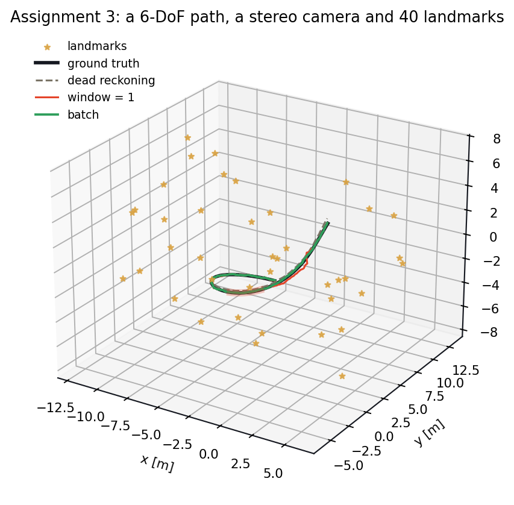
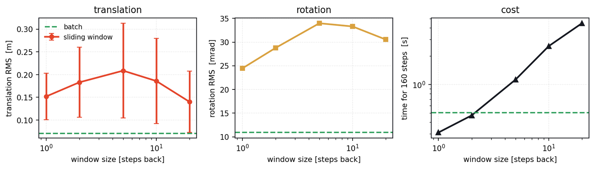
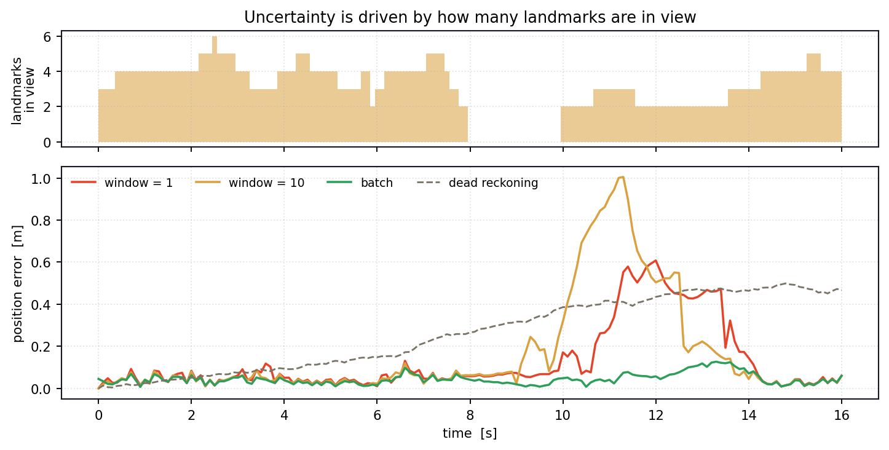
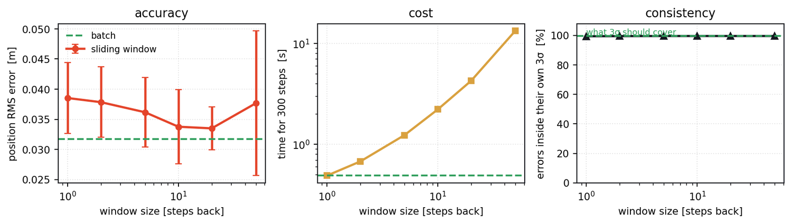
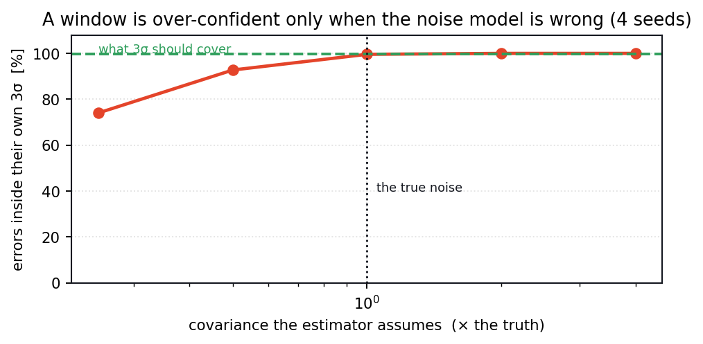

State estimation ◆ SE(3) batch optimisation ◆ AER1513 with Tim Barfoot ◆ University of Toronto ◆ 2023
A vehicle with an IMU, a stereo camera and a map of landmarks, asking the oldest question in robotics. The answer is a maximum-a-posteriori estimate over every pose at once, on SE(3) — and the only real knob is how many of those poses you are willing to solve for together. One is a Kalman filter. All of them is batch estimation. This is Assignment 3 of AER1513, and below you can drag that knob and watch what it costs.

The Starry Night dataset: 1,700 timesteps of stereo and IMU data, and the question of how much of the trajectory you are willing to solve for at once.
This is the Assignment 3 estimator, running in your browser: SE(3) poses, a stereo camera with the rig's real intrinsics, an IMU twist, and Gauss-Newton with a left perturbation. Every pose in the window is solved for at once. Drag the window from 1 — which is an extended Kalman filter — to the whole trajectory, which is batch estimation.
Batch is doing something a filter cannot: a landmark seen at step 90 corrects the pose at step 40, because both are unknowns in the same solve. Turn the blackout on and watch the batch estimate stay flat through it while the filter opens up.
The trick that makes batch estimation batch is refusing to throw anything away. Rather than carrying a single current belief forward, stack every pose from k₁ to k₂ into one enormous state and ask for the trajectory that best explains the whole dataset at once:
Poses live on a Lie group, so the motion model is a matrix exponential rather than an addition, driven by the IMU's measured body-frame twist ϖ = [ν; ω]:
and the stereo camera gives four numbers per landmark — the same point in the left and right images:
Errors on a group are logarithms, not differences. The motion error compares the pose the IMU predicts with the pose in the state; the measurement error is an ordinary residual in pixels:
Minimise the Mahalanobis sum of both. Linearising needs a perturbation that stays on the group — a left one, T ← exp(ε∧) T — which is what makes the Jacobians clean. The motion Jacobian is the adjoint of the increment; the measurement Jacobian is the projection derivative composed with the circle-dot operator:
Stack all of that and one sparse Gauss-Newton solve, A δ = b with A = HTW−1H, gives a correction to every pose simultaneously. The information matrix is block-tridiagonal from the motion terms with a block-diagonal fringe from the landmarks, and it is 6N × 6N — which is where the cost lives, and why the window size is the knob it is.
The sliding window is the same solve over a suffix of the trajectory, with the poses that fell off the back summarised as a Gaussian prior on the oldest remaining one. Shrink the window to a single step and every term but the newest disappears; what is left is an extended Kalman filter. The report puts it plainly: "when the window size equals 1, this practically becomes a Kalman Filter."
The estimated trajectory against ground truth, from the assignment.
| AER1513 | Problem | Estimator |
|---|---|---|
| Assignment 1 | Noise characterisation and linear-Gaussian estimation | batch least squares |
| Assignment 2 | Lost in the Woods, planar range-bearing | EKF / batch, ℝ³ |
| Assignment 3 | Starry Night, stereo + IMU | batch and sliding window on SE(3) |
Only the Assignment 3 report is on this site; it is the one that carries the SE(3) derivation and the window study.
Three seeds, 160 steps each, all of it in scripts/tools/run_se3.py. The point is not that batch wins — it should — but by how much, and at what price.

On the planar problem batch beats a filter by 18 %. Here it is a factor of 2.2 in translation and 2.2 in rotation. The reason is the observation model: a stereo camera sees a landmark only within range and inside the field of view, so at any instant the vehicle typically has three or four measurements against six degrees of freedom. A filter has to commit to a pose on that. Batch does not — a landmark first seen at step 90 constrains the pose at step 40, because both are unknowns in the same linear system.
That is the whole argument for batch estimation in one sentence, and it is why calibration problems are solved this way and navigation problems usually are not.
The report notes that a smaller window runs faster, and per step that is exactly right — the information matrix is (6N)², so halving the window quarters the solve. But a sliding window does that solve at every step, and batch does one solve, ever.
Over 160 steps: a window of 20 costs 4.5 s, a window of 1 costs 0.3 s, and full batch costs 0.5 s — nine times cheaper than the 20-step window and more accurate than all of them. The sliding window earns its place because it runs online, one step at a time, without waiting for the end of the trajectory. Not because it is cheap.

Before any of this, the assignment asks whether the noise really is zero-mean Gaussian. The IMU is — comfortably so, and if anything the supplied covariance is under-confident, since the histogram peaks sit above the fitted Gaussian. The stereo camera is not: ul and ur fit well, but vl and vr are tail-heavy with a −7 pixel bias.
Every estimator on this page assumes that bias away. It is small enough not to matter for this trajectory, and it is exactly the kind of thing that silently limits an accuracy claim, so it is worth stating rather than burying.
Assignment 2 is the planar version of the same idea: Lost in the Woods, a wheeled robot with wheel odometry measuring range and bearing to known landmarks. Three states instead of six, a 2×1 measurement instead of a stereo 4×1, and no Lie group — but the same stacked state, the same Gauss-Newton, and the same window knob. It is the right place to build intuition before the SE(3) version, and it runs fast enough to re-solve on every slider move.
The Lost in the Woods run: the robot wanders among the landmarks while the estimator tracks it. Twenty-one minutes of animation at sixteen times speed.
Take the landmarks down to four and the estimate starts to look like the dead-reckoned path.

The Assignment 3 report finds that the sliding-window 3σ bounds fail to cover the error while the batch bounds are "perfectly bounded", and suspects a poor initial covariance estimate. That is a testable claim, so I tested it on the planar problem, where a four-seed sweep is cheap: hold the true noise fixed and scale the covariance the estimator believes.
With the correct Q and R a window of 10 puts 99.6 % of its errors inside its own 3σ. Tell it the noise is four times smaller than it is and that falls to 74.1 % — while the position estimate does not move at all, 0.0338 m either way. The report's diagnosis was right: a covariance mismatch does not make the estimate worse, it makes the estimate's account of itself worse, which is more dangerous, because nothing downstream can tell.

The SE(3) sandbox runs assets/js/se3_engine.js and the planar one assets/js/localization_engine.js — the same Gauss-Newton solves as scripts/tools/se3.py and estimator.py, including the marginal covariance of the newest pose, which is what the 3σ readout uses. The Starry Night and Lost in the Woods datasets are course-distributed and are not redistributed here; both harnesses generate their own data from the same models.
AER1513: State Estimation for Aerospace Vehicles at the University of Toronto, taught by Prof. Tim Barfoot. The Starry Night dataset and the Lost in the Woods dataset are from the course; the SE(3) batch estimator, the sliding-window study and the noise analysis are the assignment.
The 2-D re-implementation, the four-seed sweep, the covariance-mismatch experiment and the sandbox on this page were built afterwards.